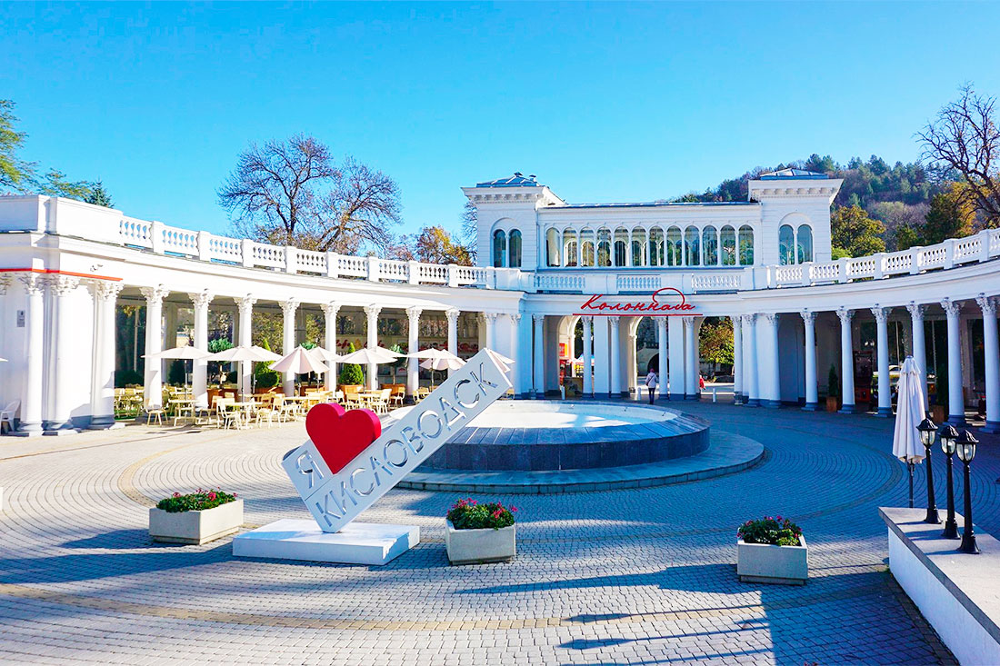
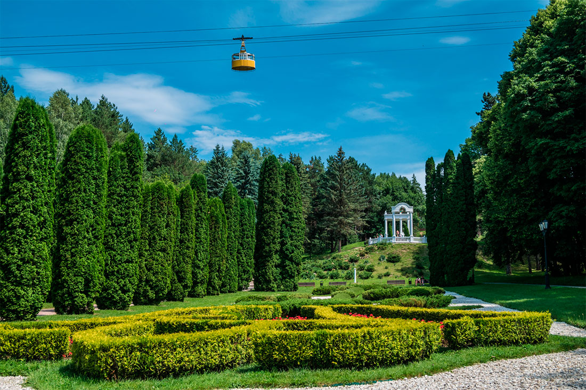
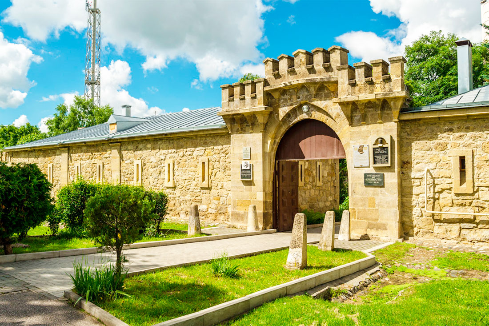
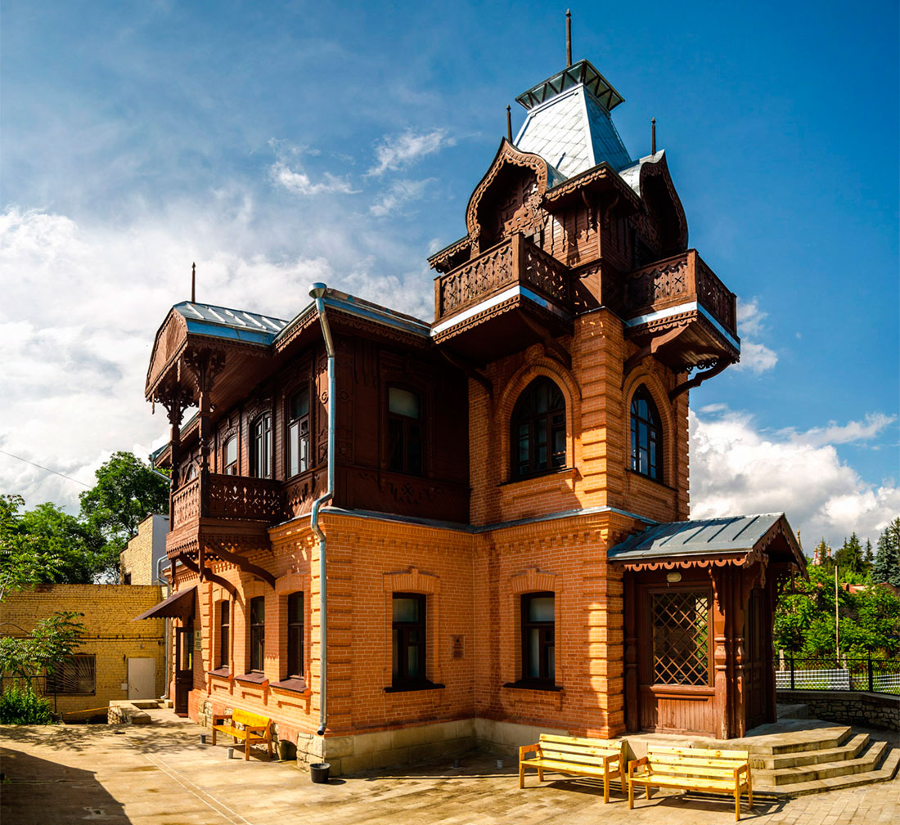

Кисловодск
1.Каскадная лестница
С северной стороны национального Кисловодского парка находится красивая лестница, оформленная в стиле античной классики. В теплое время года вдоль ступеней каскадами спускаются фонтаны, что является очень впечатляющим зрелищем.
Сама лестница состоит из двух частей, разделенных террасой в середине подъема. Венчает конструкцию колоннада с просторной смотровой площадкой, откуда открывается восхитительная панорама на город. Особенно красиво каскадная лестница выглядит в темное время суток, когда включается оригинальная подсветка.

2.Колоннада Курортного парка
Открытие колоннады состоялось в 1913 году. Двухъярусное полукруглое сооружение выполнено в неоклассическом стиле. Над проектом работал талантливый архитектор Семенов, в задумках которого было разместить на верхнем ярусе летний ресторан. Сегодня через роскошную колоннаду сотни людей ежедневно входят в Кисловодский парк. Более чем за сто лет существования конструкция сумела сохранить первоначальную величественность и грандиозность.

3.Долина роз
В центре Кисловодского парка раскинулась грандиозная клумба, на которой растет более 80 редких сортов роз.
Гигантский розарий ведет свою историю с первой половины 19 века: солдаты местного гарнизона вручную привозили на тележках чернозем, так как почва парка не подходила для разведения элитных цветов.
За состоянием растений следят опытные садоводы и профессиональные ландшафтные дизайнеры. Настоящее благоухающее великолепие встречает гостей в самый разгар лета, в июле и августе. На фоне цветущего розария получаются прекрасные фотографии. Срывать цветы строго запрещено.

4.Музей Кисловодска «Крепость» — место, где берет начало история города
Стены крепости были заложены в 1803 году. Сооружение входило в масштабную оборонительную линию, которая тянулась от реки Терек до Нижнего Дона.
Сегодня внутри расположен историко-краеведческий музей. Посетители могут ознакомиться с выставками старинного оружия, монет, посуды; изучить фотографии и документы.
Особого внимания заслуживают древние археологические находки, возраст некоторых реликвий насчитывает не одно тысячелетие. Территория у входа в музей тоже представляет интерес для туристов. Здесь выставлена военная техника, стоят колоритные каменные изваяния и даже образец первой нарзанной купели.

5.Информационно-Культурный Центр «Музей А.И.Солженицына»
Солженицын родился в Кисловодске, но дом, в котором он сделал первые шаги, не сохранился. Зданием музея стал особняк его тетушки, где будущий писатель жил с матерью на протяжении четырех лет. Постоянная экспозиция рассказывает о жизни Солженицына, его успехах и неудачах. Представлены фотографии, школьные тетради, личные вещи писателя. Кроме выставок, в музее постоянно проводятся увлекательные лекции, семинары, литературные вечера и другие интересные мероприятия.
